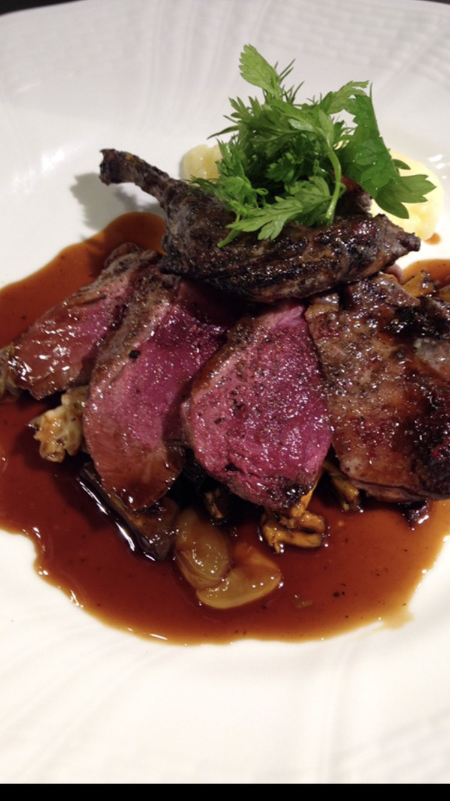
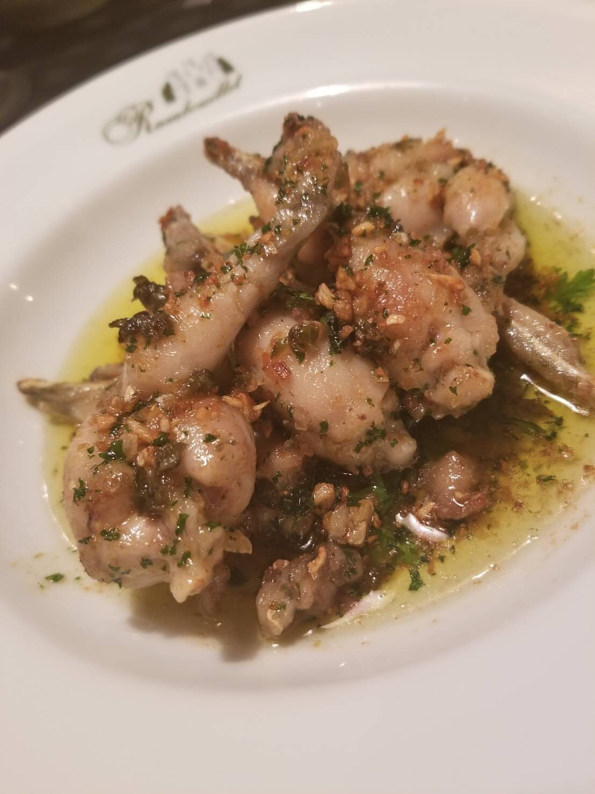
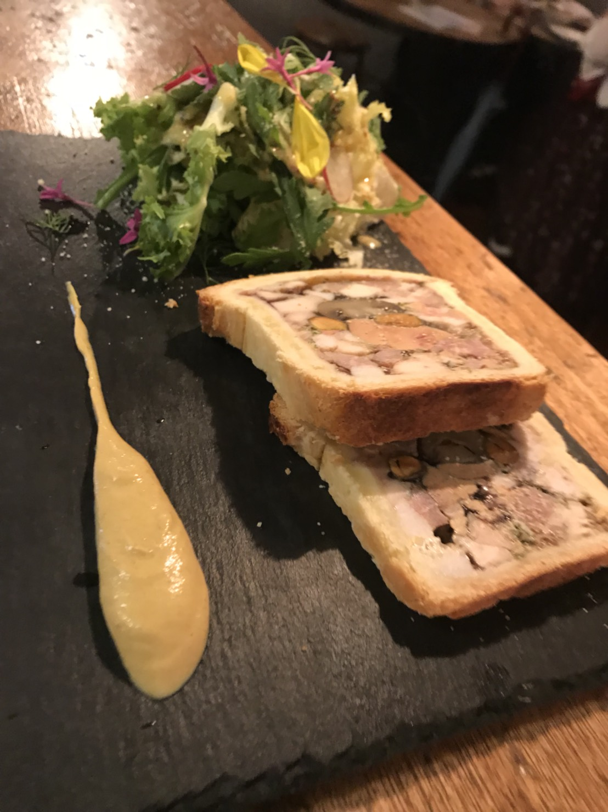
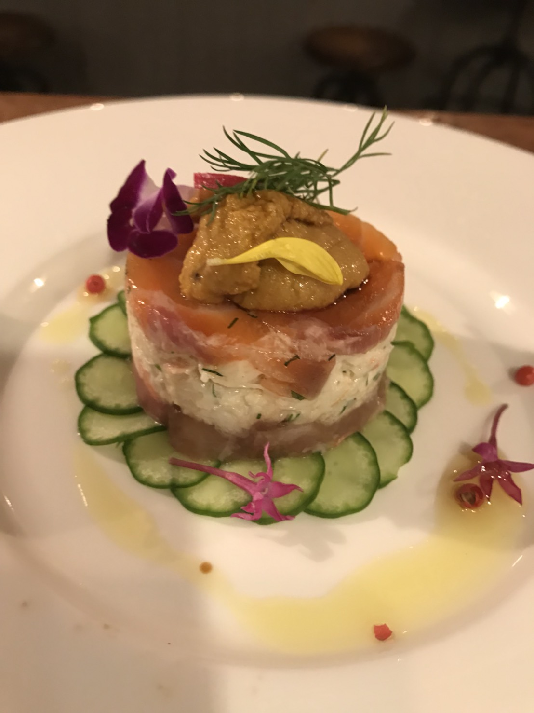
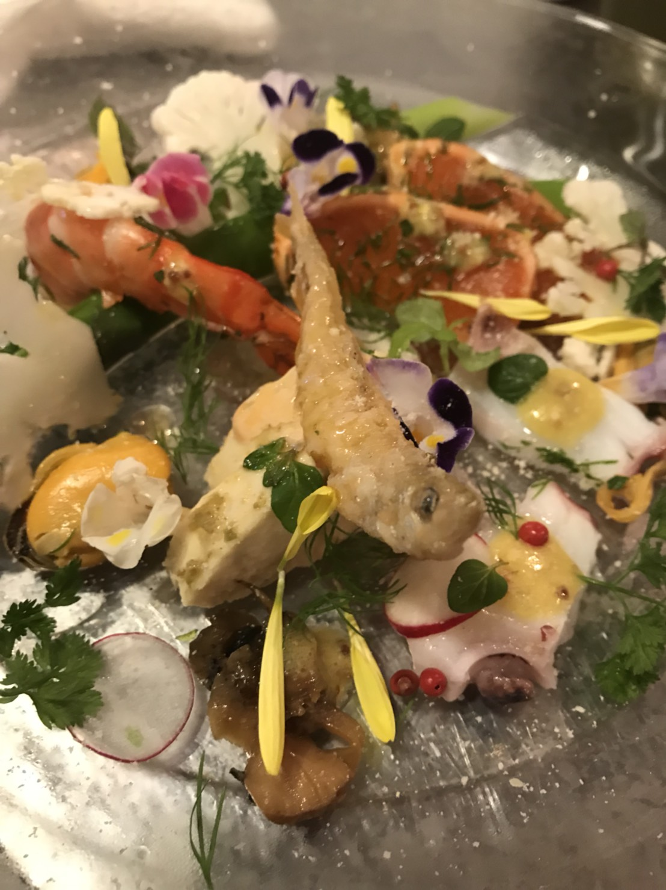
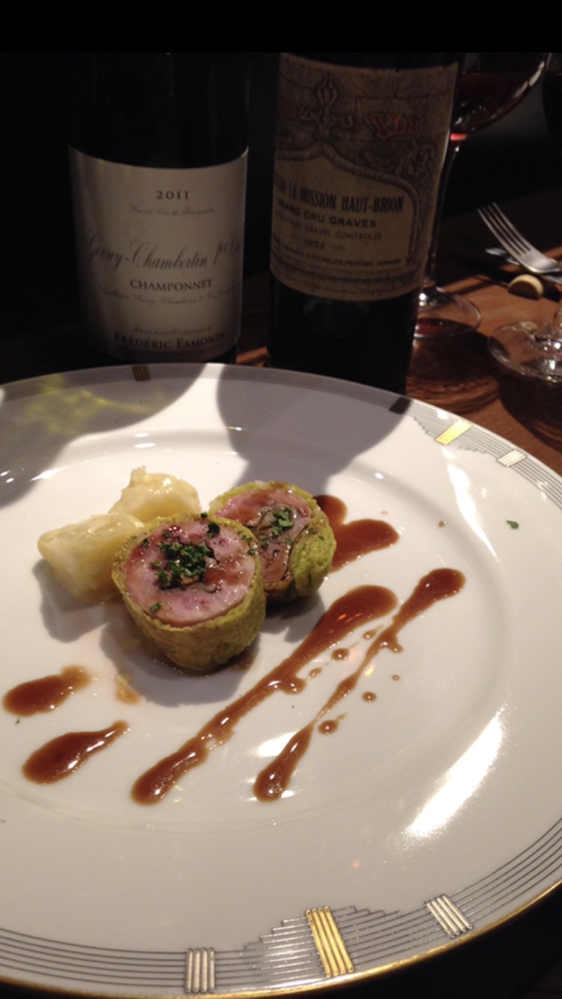

フードメニュー
FOODMENU
ドリンクメニュー
DRINKMENU
アクセス
ACCESS
店舗について
ABOUT
ブログ
BLOG
フードメニュー
FOODMENU
ドリンクメニュー
DRINKMENU
アクセス
ACCESS
店舗について
ABOUT
ブログ
BLOG
フードメニュー
DORINKMENU

山鴨のロースト

カエルのムニエル
バターガーリック焼き

パテアンクルート(豚・鶏・牛)

鯛・蟹・マグロのガレッド仕立て

魚介類の庭園仕立て

ウズラをフォアグラのキャベツ包み
フランスパン
380円
オリーブのマリネ
500円
カブのサラダ
600円
生ハムサラダ
1000円
フレッシュトマトサラダ
600円
大盛りグリーンサラダ
700円
チーズの盛り合わせ
900円
ラタトゥイユ
700円
鮮魚のカルパッチョ
800円
色々なお肉のパテ
1000円
フレッシュフォアグラのパテ
1300円
白レバーの網焼き
700円
エビのムース
900円
白レバーのムース
900円
伊達鶏もも肉のステーキ
1200円
パネトーネ
500円
スーパーフルーツトマト
600円
ほうれん草とポテトのキッシュ
800円
ホワイトアスパラの温製
1200円
タケノコのバター焼き
900円
タケノコと里芋のテリーヌ
1000円
猪とロバ肉のパテ
1500円
ウズラのロースト
2500円
ハトのロースト
3800円
ヨドリの丸焼き
1800円
猪のレバーの網焼き
900円
京都産鹿ロースの串焼き
1200円
国産合鴨のステーキ
2500円
国産豚肉のステーキ
1800円
牛ハラミのステーキ
2000円
牛テールの赤ワインシチュー
2500円
ナヴァラン・ダニュー
2800円
岡山産ヌートリアの網焼き
2800円
岡山産ヌートリアの
赤ワインシチュー
3500円